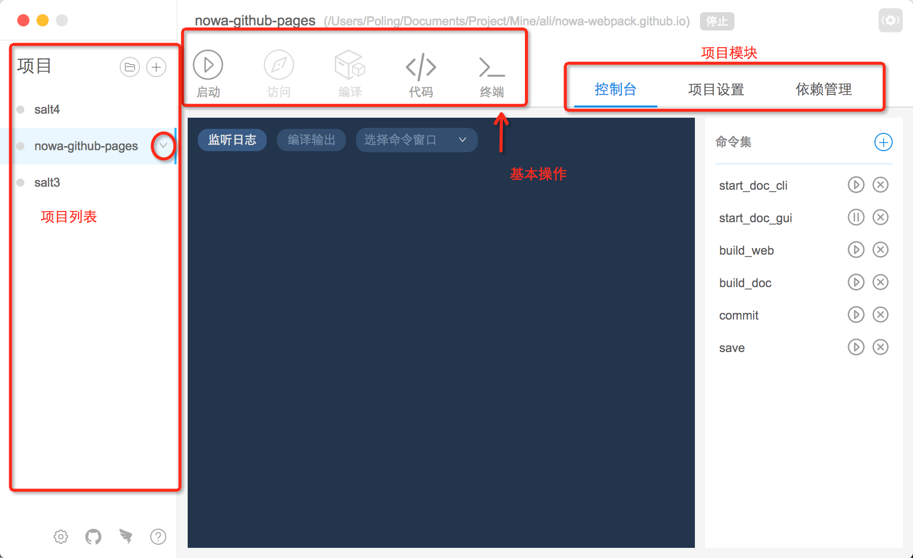

基础操作
请看视频演示基础操作，如果想看笔者唠嗑请继续往下拉。

文字解说：

1、删除项目
选中项目后，项目列表尾部会出现向下剪头。

当用户点击箭头之后，会出现'删除项目'的选项。点击该像，弹窗二次提醒用户删除项目。
删除项目只是从工具中移除项目，不会真的进行物理操作从磁盘中删除该项目，请用户放心。
2、打开项目文件夹
- 请在左侧项目列表中选中项目
- 请点击向下按钮
- 请点击 '打开文件夹'
3、使用编辑器打开项目
如果没有设置编辑器，请查看如何设置编辑器。
点击大大的 '代码' 按钮即会出现编辑器。
采用外接编辑器的做法是因为省时省力省心。
4、打开项目终端
在项目目录下唤起终端。
5、启动项目
如果是 nowa 项目，那么'启动'项目之后，会解锁'访问'功能。用户可以直接点击该按钮看到浏览器出现这个页面。
如果是非 nowa 项目，且用户在 package.json 中连 'start' 都没写的话，这个功能就是废的。
其实这个功能就是帮助用户执行 npm start。
6、编译项目
其实这个功能就是帮助用户执行 npm run build。